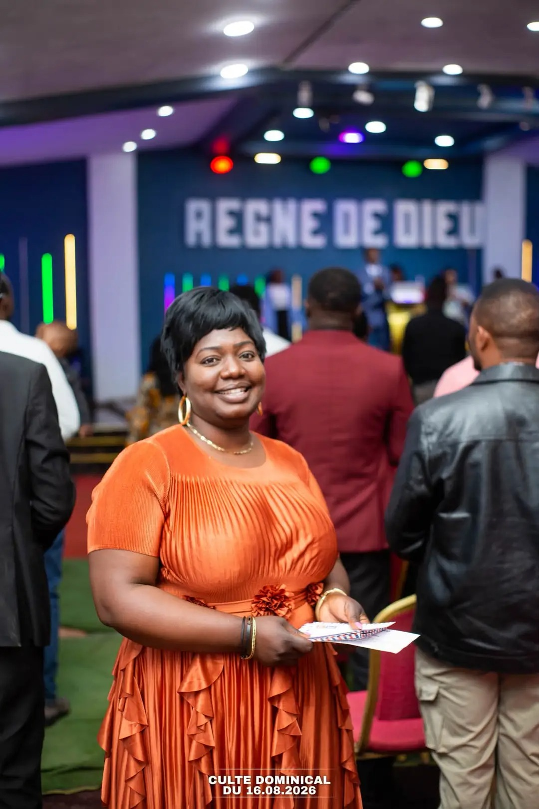

Justice
Agir avec équité, soutenir les personnes vulnérables et contribuer au bien commun.
Une communauté de foi à Kolwezi
Que Jésus-Christ seul règne dans tous les secteurs.
Votre première visite
Choisissez un culte et retrouvez-nous à Kolwezi. Pour préparer votre venue, les horaires, l’itinéraire et les coordonnées de l’église sont réunis ici.
Préparer ma visiteKolwezi, avenue Sendwe/3Z.
Derrière Kin Marché Arcadia.
Ce qui nous rassemble
Ces valeurs guident notre vie communautaire et notre engagement auprès des autres.
Agir avec équité, soutenir les personnes vulnérables et contribuer au bien commun.
S’appuyer sur la prière et la foi pour servir la communauté avec espérance.
Vivre une foi consacrée, guidée par la Parole et la fidélité à Dieu.
Nos rencontres
Enseignement biblique, prière et louange rythment la vie de l’église.
Les horaires peuvent évoluer. Contactez-nous avant votre venue pour les confirmer.
Horaires et cultes en ligne
La communauté
Fondée sur la Parole de Dieu et centrée sur Jésus-Christ, notre communauté s’engage dans la proclamation de l’Évangile, la formation des disciples et la restauration des vies et des familles.
Découvrir l’égliseVous êtes les bienvenus
Retrouvez-nous à Kolwezi, avenue Sendwe/3Z. Repère : derrière Kin Marché Arcadia.
Préparer ma visite